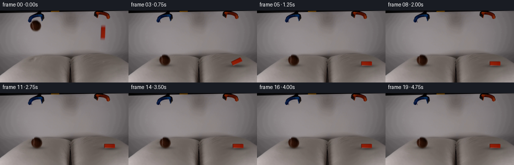
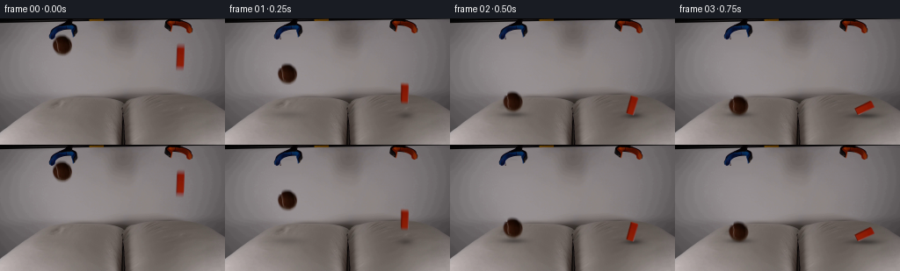
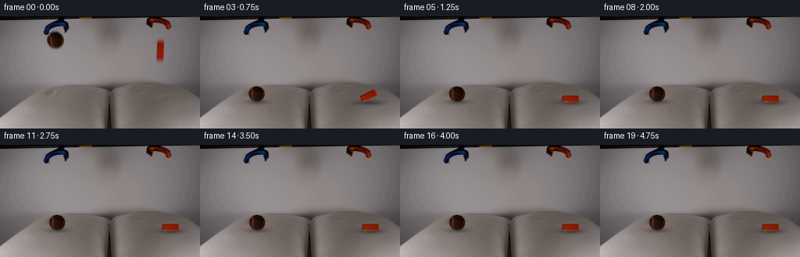
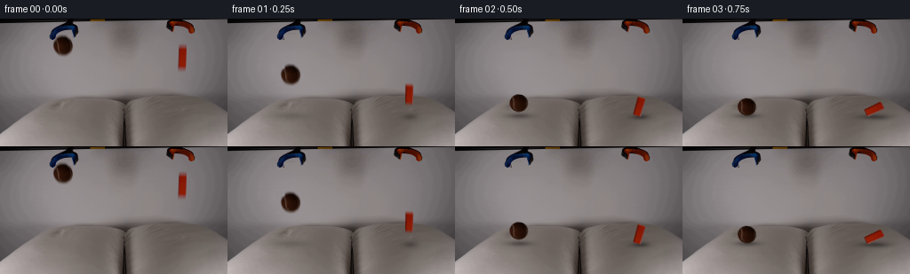

CODING AGENTS AS PIXEL WORLD MODELS
traex/GPT-6.1-Sol · 0002
点击播放 · 原生 RGB 像素
逐轮保存的候选
回放视频、检查图与代码变化。
每份候选均可单独播放。实际图片检查记录在下方工具轨迹中。
候选 01播放与检查图
点击播放 · 原生 RGB 像素


展开代码变化
--- 上一保存版本
+++ 本次保存版本
@@ -0,0 +1,237 @@
+from pathlib import Path
+import math
+import numpy as np
+from PIL import Image
+import cv2
+from scipy.ndimage import gaussian_filter, map_coordinates
+from artifact_io import save
+
+ROOT = Path(__file__).resolve().parent
+H, W = 144, 256
+Y, X = np.mgrid[:H, :W].astype(np.float32)
+
+
+def wall_estimate(image, xlo, xhi, excluded, ylo, yhi):
+ """Fit the local, softly illuminated wall, using only unoccluded pixels."""
+ field = image.copy()
+ xx = np.arange(xlo, xhi)
+ valid = ~np.isin(xx, np.arange(*excluded))
+ xxv = xx[valid]
+ matrix = np.stack([np.ones_like(xxv), (xxv - (xlo+xhi)/2)/30,
+ ((xxv - (xlo+xhi)/2)/30)**2], axis=1)
+ target = np.stack([np.ones_like(xx), (xx-(xlo+xhi)/2)/30,
+ ((xx-(xlo+xhi)/2)/30)**2], axis=1)
+ for y in range(ylo, yhi):
+ sample = np.mean(image[max(y-1,0):y+2, xxv], axis=0)
+ coef = np.linalg.lstsq(matrix, sample, rcond=None)[0]
+ field[y, xx] = target @ coef
+ return field
+
+
+def prepare(image):
+ wall = wall_estimate(image, 41, 108, (55, 87), 16, 46)
+ wall = wall_estimate(wall, 186, 226, (199, 211), 25, 63)
+
+ # The blue fingers are already separated at the opening of the shot.
+ # Retain them, their shadows, and all fixed apparatus exactly in place.
+ ball_region = (((X-70.7)/12.8)**2 + ((Y-30.2)/14.0)**2)
+ removal = np.clip((1.15-ball_region)/.18, 0, 1)
+ fingers = ((Y < 24) & (X < 63.3)) | ((Y < 22) & (X > 80.5))
+ removal[fingers] = 0
+ block_removal = ((X >= 198) & (X <= 212) & (Y >= 26) & (Y <= 61)).astype(np.float32)
+ block_removal = gaussian_filter(block_removal, .5)
+ clean = image * (1-removal[..., None]) + wall*removal[..., None]
+ clean = clean * (1-block_removal[..., None]) + wall * block_removal[..., None]
+
+ # Recover a soft alpha from local contrast; the interior is kept intact,
+ # including the little curved pale seam on the brown tennis ball.
+ alpha = np.clip((wall[..., 1]-image[..., 1]) / np.maximum(wall[...,1]-15,1),0,1)
+ alpha *= np.clip((1.2-ball_region)/.25, 0, 1)
+ alpha[fingers] = 0
+ core = (((X-70.5)/9.5)**2 + ((Y-30.1)/8.65)**2) < .93
+ alpha[core] = 1
+ alpha[alpha < .023] = 0
+ color = (image - wall*(1-alpha[...,None]))/np.maximum(alpha[...,None],.03)
+ color = np.clip(color, 0, 255)
+ premult = color*alpha[...,None]
+ # Smaller reusable patch, with its original optical edge softness.
+ ball_a = alpha[16:46, 56:87]
+ ball_p = premult[16:46, 56:87]
+ return clean, ball_p, ball_a
+
+
+def put_ball(canvas, premult, alpha, cx, cy, angle, squash=0):
+ # High-quality fractional-pixel placement, keeping the original shading.
+ c, s = math.cos(angle), math.sin(angle)
+ rx, ry = X-cx, Y-cy
+ sx = (c*rx + s*ry)/(1+.035*squash) + (70.7-56)
+ sy = (-s*rx + c*ry)/(1-.07*squash) + (30.2-16)
+ a = cv2.remap(alpha.astype(np.float32), sx.astype(np.float32), sy.astype(np.float32), cv2.INTER_LINEAR,
+ borderMode=cv2.BORDER_CONSTANT)
+ p = cv2.remap(premult.astype(np.float32), sx.astype(np.float32), sy.astype(np.float32), cv2.INTER_LINEAR,
+ borderMode=cv2.BORDER_CONSTANT)
+ # The held ball's upper surface is no longer directly under the fingers.
+ p *= 1.035
+ return canvas*(1-a[...,None])+p
+
+
+def ball_state(t):
+ initial_y = 30.2
+ floor = 108.8
+ radius = 10.0
+ rest = floor-radius
+ gravity, velocity = 850., 25.
+ hit = (-velocity+math.sqrt(velocity**2+2*gravity*(rest-initial_y)))/gravity
+ if t < hit:
+ return 70.7 + .5*t, initial_y+velocity*t+.5*gravity*t*t, .15*t, 0., hit
+ u = t-hit
+ v = .25*(velocity+gravity*hit)
+ bounce_end = 2*v/gravity
+ if u < bounce_end:
+ cy = rest-v*u+.5*gravity*u*u
+ compression = .8*math.exp(-u/.06)
+ else:
+ q = u-bounce_end
+ compression = .22+ .42*math.exp(-q/ .13)
+ cy = rest+.40*(1-math.exp(-q/.12)) + .3*math.exp(-q/.15)*math.sin(q*30)
+ cx = 70.7 + 2.05*(1-math.exp(-u/ .36))
+ angle = .05 + .18*(1-math.exp(-u/.4))
+ return cx, cy, angle, compression, hit
+
+
+def block_state(t):
+ # A wooden block meets the soft cushion, then tips onto its long side.
+ floor = 109.0
+ cy0 = 44.2
+ h, w = 20., 7.4
+ g, v = 850., 60.
+ hit = (-v+math.sqrt(v*v+2*g*(floor-h/2-cy0)))/g
+ if t < hit:
+ return 205.1, cy0+v*t+.5*g*t*t, .012*t, 0., hit
+ u = t-hit
+ q = np.clip((u-.035)/.65, 0., 1.)
+ # Angular acceleration followed by a damped stop, not uniform rotation.
+ smooth = q*q*(3-2*q)
+ angle = smooth*math.pi/2
+ if q >= 1:
+ angle += .028*math.exp(-(u-.685)/.18)*math.sin((u-.685)*24)
+ compression = 1.0*(1-math.exp(-u/.055))+.8*math.exp(-u/.15)
+ pivot_x = 208.8
+ cx = pivot_x-(w/2*math.cos(angle)-h/2*math.sin(angle))
+ cy = floor+compression-(h/2*abs(math.cos(angle))+w/2*abs(math.sin(angle)))
+ return cx, cy, angle, compression, hit
+
+
+def pillow(canvas, t, bs, os):
+ bx, by, ba, bc, bhit = bs
+ ox, oy, oa, oc, ohit = os
+ bdt=max(0.,t-bhit)
+ odt=max(0.,t-ohit)
+ bdepth = 0 if t<bhit else .5+1.65*math.exp(-bdt/.16)*(0.65+.35*math.cos(26*bdt))
+ odepth = 0 if t<ohit else .8+1.55*math.exp(-odt/.18)
+ bg = np.exp(-.5*((X-bx)/17.5)**2-.5*((Y-109)/9.0)**2)
+ og = np.exp(-.5*((X-ox)/20.)**2-.5*((Y-110)/10.)**2)
+ # Displacement fades away above the pillow; table and apparatus are fixed.
+ lower = np.clip((Y-88)/14,0,1)
+ deformation = (bdepth*bg+odepth*og)*lower
+ canvas = cv2.remap(canvas.astype(np.float32), X, (Y-deformation).astype(np.float32), cv2.INTER_LINEAR,
+ borderMode=cv2.BORDER_REPLICATE)
+ # Gentle folds/shading surrounding, rather than a painted dark crater.
+ cloth_shade = 1 - lower*(.014*bdepth*bg + .017*odepth*og)
+ canvas *= cloth_shade[...,None]
+ # Contact shadows remain on the receiving cushion, tightening on approach.
+ ball_height = max(0,98.8-by)
+ strength = .37*math.exp(-ball_height/35)
+ sigma_x = 9.3+ball_height*.12
+ sigma_y = 2.0+ball_height*.025
+ shadow = strength*np.exp(-.5*((X-(bx+1.1))/sigma_x)**2-.5*((Y-109.2)/sigma_y)**2)
+ h = 10*abs(math.cos(oa))+3.7*abs(math.sin(oa))
+ block_height = max(0,109-(oy+h))
+ spread_x = 4.4*abs(math.cos(oa))+11.0*abs(math.sin(oa))+block_height*.10
+ shadow += .4*math.exp(-block_height/28)*np.exp(-.5*((X-(ox+.5))/spread_x)**2-.5*((Y-110.5)/(2.1+block_height*.04))**2)
+ shadow *= np.clip((Y-89)/8,0,1)
+ return canvas*(1-np.minimum(shadow,.64)[...,None])
+
+
+# The block is rendered as an image-textured cuboid with analytic projection.
+# This changes its visible side/top faces correctly as it tips over.
+def render_block(image, canvas, cx, cy, angle, falling, speed):
+ S = 4
+ sh, sw = H*S, W*S
+ overlay = np.zeros((sh,sw,3),np.float32)
+ coverage = np.zeros((sh,sw),np.float32)
+ w,h,d = 7.4,20.,3.4
+ # Map the object's 3-D vertices into the one locked camera.
+ c,s=math.cos(angle), math.sin(angle)
+ def project(p):
+ px,py,pz=p
+ return np.array([cx+c*px+s*py-.37*pz, cy+s*px-c*py-.26*pz])
+ vertices={}
+ for i in range(8):
+ vertices[i]=project(((w/2 if i&1 else -w/2), (h/2 if i&2 else -h/2), (d if i&4 else 0)))
+ front=[0,1,3,2]
+ side=[0,2,6,4]
+ top=[2,3,7,6]
+ bottom=[0,1,5,4]
+ faces=[(side,np.array([93.,18.,3.])),(top,np.array([153.,35.,7.])),(bottom,np.array([90.,16.,3.]))]
+ # Back faces first. The camera-facing source image texture goes on last.
+ for ids,col in faces:
+ pts=np.array([vertices[k]*S for k in ids]).round().astype(np.int32)
+ mask=np.zeros((sh,sw),np.uint8)
+ cv2.fillConvexPoly(mask,pts,255)
+ a=mask.astype(np.float32)/255
+ overlay=overlay*(1-a[...,None])+a[...,None]*col
+ coverage=np.maximum(coverage,a)
+ # Source texture: the central, sharp face, away from the initial blur.
+ tex=image[34:54,202:210].copy().astype(np.float32)
+ tex=cv2.resize(tex,(32,80),interpolation=cv2.INTER_CUBIC)
+ src=np.array([[0,79],[31,79],[31,0],[0,0]],np.float32)
+ dst=np.array([vertices[k]*S for k in front],np.float32)
+ transform=cv2.getPerspectiveTransform(src,dst)
+ face=cv2.warpPerspective(tex,transform,(sw,sh),flags=cv2.INTER_LINEAR,borderMode=cv2.BORDER_REPLICATE)
+ mask=np.zeros((sh,sw),np.uint8)
+ cv2.fillConvexPoly(mask,np.round(dst).astype(np.int32),255)
+ a=mask.astype(np.float32)/255
+ # A restrained orientation-dependent shading keeps the orange material.
+ face*=1+.035*math.sin(angle)
+ overlay=overlay*(1-a[...,None])+face*a[...,None]
+ coverage=np.maximum(coverage,a)
+ overlay=cv2.resize(overlay,(W,H),interpolation=cv2.INTER_AREA)
+ coverage=cv2.resize(coverage,(W,H),interpolation=cv2.INTER_AREA)
+ # Mild photographic edge blur, with longer exposure streaks in free fall.
+ optical=.43
+ if falling:
+ # Integrate vertical travel over a short, fixed shutter interval.
+ extent=min(6.2,max(1.1,speed*.014))
+ accum=np.zeros_like(overlay); aa=np.zeros_like(coverage)
+ for shift in np.linspace(-extent/2,extent/2,9):
+ accum+=cv2.remap(overlay,X,(Y-shift).astype(np.float32),cv2.INTER_LINEAR,borderMode=cv2.BORDER_CONSTANT)/9
+ aa+=cv2.remap(coverage,X,(Y-shift).astype(np.float32),cv2.INTER_LINEAR,borderMode=cv2.BORDER_CONSTANT)/9
+ overlay,coverage=accum,aa
+ overlay=gaussian_filter(overlay,(optical,optical,0))
+ coverage=gaussian_filter(coverage,optical)
+ return canvas*(1-coverage[...,None])+overlay
+
+
+def main():
+ image=np.asarray(Image.open(ROOT/'first_frame.png').convert('RGB'),dtype=np.float32)
+ background, ball_p, ball_a=prepare(image)
+ frames=[image.astype(np.uint8)]
+ for i in range(1,20):
+ t=i/4
+ bs,os=ball_state(t),block_state(t)
+ canvas=pillow(background.copy(),t,bs,os)
+ canvas=put_ball(canvas,ball_p,ball_a,bs[0],bs[1],bs[2],bs[3])
+ canvas=render_block(image,canvas,os[0],os[1],os[2],t<os[4],60+850*t)
+ frames.append(np.clip(np.round(canvas),0,255).astype(np.uint8))
+ frames=np.stack(frames)
+ assert np.array_equal(frames[0],np.asarray(Image.open(ROOT/'first_frame.png').convert('RGB')))
+ save(frames,ROOT)
+ # Save useful numerical intermediates for local inspection/reproducibility.
+ tmp=ROOT/'.tmp';tmp.mkdir(exist_ok=True)
+ Image.fromarray(np.clip(background,0,255).astype(np.uint8)).save(tmp/'background.png')
+ Image.fromarray(np.clip(ball_a*255,0,255).astype(np.uint8)).save(tmp/'ball_alpha.png')
+ np.save(tmp/'states.npy',np.array([[i/4,*ball_state(i/4)[:4],*block_state(i/4)[:4]] for i in range(20)]))
+
+if __name__=='__main__':
+ main()
候选 02播放与检查图
点击播放 · 原生 RGB 像素


展开代码变化
--- 上一保存版本
+++ 本次保存版本
@@ -57,7 +57,19 @@
# Smaller reusable patch, with its original optical edge softness.
ball_a = alpha[16:46, 56:87]
ball_p = premult[16:46, 56:87]
- return clean, ball_p, ball_a
+ # Remove the initial exposure's vertical blur when the ball comes to rest.
+ # The recovered felt/seam texture is extrapolated only at the thin rim.
+ radial = np.sqrt(((X-70.7)/10.3)**2+((Y-30.2)/10.0)**2)
+ clamp = np.minimum(1., .86/np.maximum(radial, .01))
+ rim_color = cv2.remap(color.astype(np.float32),
+ (70.7+(X-70.7)*clamp).astype(np.float32),
+ (30.2+(Y-30.2)*clamp).astype(np.float32),
+ cv2.INTER_LINEAR, borderMode=cv2.BORDER_REPLICATE)
+ rim_color *= (1-.10*np.clip((radial-.8)/.2, 0, 1))[..., None]
+ sharp_a = np.clip((1.025-radial)/.07, 0, 1)
+ sharp_a = gaussian_filter(sharp_a, .32)
+ sharp_p = rim_color*sharp_a[..., None]
+ return clean, ball_p, ball_a, sharp_p[16:46,56:87], sharp_a[16:46,56:87]
def put_ball(canvas, premult, alpha, cx, cy, angle, squash=0):
@@ -215,13 +227,16 @@
def main():
image=np.asarray(Image.open(ROOT/'first_frame.png').convert('RGB'),dtype=np.float32)
- background, ball_p, ball_a=prepare(image)
+ background, ball_p, ball_a, sharp_p, sharp_a=prepare(image)
frames=[image.astype(np.uint8)]
for i in range(1,20):
t=i/4
bs,os=ball_state(t),block_state(t)
canvas=pillow(background.copy(),t,bs,os)
- canvas=put_ball(canvas,ball_p,ball_a,bs[0],bs[1],bs[2],bs[3])
+ sharpness = np.clip((t-bs[4])/.12, 0, 1)
+ bp = (1-sharpness)*ball_p+sharpness*sharp_p
+ aa = (1-sharpness)*ball_a+sharpness*sharp_a
+ canvas=put_ball(canvas,bp,aa,bs[0],bs[1],bs[2],bs[3])
canvas=render_block(image,canvas,os[0],os[1],os[2],t<os[4],60+850*t)
frames.append(np.clip(np.round(canvas),0,255).astype(np.uint8))
frames=np.stack(frames)
可观测工具轨迹
实际执行的命令与返回图片。
命令 1exit 0
/bin/bash -lc 'ls -la && cat prompt.txt && cat GENERATION_RULES.md'
命令 2exit 0
/bin/bash -lc "cat artifact_io.py && python - <<'PY'
from PIL import Image
import numpy as np
im=np.array(Image.open('first_frame.png')); print(im.shape)
# ASCII color map sampled 4x4, categorization
for y in range(0,144,3):
s=''
for x in range(0,256,3):
r,g,b=im[y:y+3,x:x+3].mean((0,1))
if max(r,g,b)-min(r,g,b)<15: c=' ' if r>205 else '.' if r>150 else ':' if r>100 else 'o' if r>50 else '#'
elif r>g*1.25 and r>b*1.5: c='R' if r>160 else 'r'
elif b>r*1.1: c='B'
elif g>r*1.1: c='G'
elif r>g and g>b*1.18:c='y' if r>160 else 'b'
else:c='.'
s+=c
print(f'{y:3d} {s}')
PY"命令 3exit 0
/bin/bash -lc "python - <<'PY'
from PIL import Image
import numpy as np
im=np.array(Image.open('first_frame.png'))
print(im.min((0,1)),im.max((0,1)),im.mean((0,1)))
# brightness 128 columns
chars=' .:-=+*#%@'
gray=im@np.array([.299,.587,.114])
for y in range(0,144,2):
line=''.join(chars[min(9,int(gray[y:y+2,x:x+2].mean()/256*10))] for x in range(0,256,2))
print(f'{y:3d} {line}')
for p in [(0,0),(128,60),(100,50),(200,80),(80,80),(200,110),(80,110),(100,140),(150,140),(70,30),(70,20),(205,40)]:print(p,im[p[1],p[0]])
PY"命令 4exit 0
/bin/bash -lc "python - <<'PY'
from PIL import Image
import numpy as np
from scipy import ndimage
im=np.asarray(Image.open('first_frame.png')).astype(float)
# color at grid large
for y in [0,5,10,15,20,25,30,35,40,45,50,55,60,70,80,85,90,95,100,110,120,130,140]:
print('y',y,' '.join(f'{x}:{tuple(im[y,x].astype(int))}' for x in range(0,256,10)))
# RGB difference/gradient patch x54:96 y10:43
print('\\nBALL color (r-g,b):')
for y in range(16,43):
print(f'{y:2}', ''.join((' ' if im[y,x,0]-im[y,x,1]<8 else '.' if im[y,x,0]-im[y,x,1]<15 else 'o' if im[y,x,0]-im[y,x,1]<25 else 'O' if im[y,x,0]-im[y,x,1]<40 else '@') for x in range(53,96)))
print('\\nBLOCK difference')
for y in range(20,62):
print(f'{y:2}', ''.join((' ' if im[y,x,0]-im[y,x,1]<12 else '.' if im[y,x,0]-im[y,x,1]<30 else 'o' if im[y,x,0]-im[y,x,1]<60 else 'O' if im[y,x,0]-im[y,x,1]<90 else '@') for x in range(185,222)))
PY"命令 5exit 0
/bin/bash -lc "python - <<'PY'
from PIL import Image
import numpy as np
im=np.array(Image.open('first_frame.png')).astype(float)
for box in [(50,0,96,45),(182,0,222,23),(192,24,216,62)]:
x0,y0,x1,y1=box
print('\\nregion',box)
for y in range(y0,y1):
s=''
for x in range(x0,x1):
r,g,b=im[y,x]
if b-r>12: c='B' if b>65 else 'b'
elif r-g>15:c='R' if r-g>60 else 'r'
elif r<30:c='#'
elif r<65:c='o'
elif r<100:c=':'
elif r<125:c='.'
else:c=' '
s+=c
print(f'{y:02} {s}')
PY"命令 6exit 0
/bin/bash -lc "python - <<'PY'
import importlib.util
for m in ['cv2','scipy']:print(m, bool(importlib.util.find_spec(m)))
from PIL import Image
import numpy as np
im=np.asarray(Image.open('first_frame.png')).astype(float)
# examine local brightness gradients and wall/foreground
for y in range(80,121,2):
print(y,' '.join(f'{x}:{im[y,x,0]:.0f}' for x in range(25,130,5)))
print('block samples')
for y in range(28,61):
print(y,','.join('/'.join(map(str,a)) for a in im[y,199:213].astype(int)))
PY"命令 7exit 0
/bin/bash -lc "python - <<'PY'
from PIL import Image
import numpy as np
im=np.asarray(Image.open('first_frame.png')).astype(float)
# actual values in ball area
for y in range(18,43,2):
print(y,' '.join(f'{x}:{tuple(im[y,x].astype(int))}' for x in range(58,86,2)))
# left jaw blue extent by row and right red extent
for y in range(4,26):
print('tool',y,np.where((im[y,:,2]-im[y,:,0]>10)&(np.arange(256)>48)&(np.arange(256)<92))[0].tolist())
PY"命令 8exit 0
/bin/bash -lc "cat > generate.py <<'PY'
from pathlib import Path
import math
import numpy as np
from PIL import Image
import cv2
from scipy.ndimage import gaussian_filter, map_coordinates
from artifact_io import save
ROOT = Path(__file__).resolve().parent
H, W = 144, 256
Y, X = np.mgrid[:H, :W].astype(np.float32)
def wall_estimate(image, xlo, xhi, excluded, ylo, yhi):
\"\"\"Fit the local, softly illuminated wall, using only unoccluded pixels.\"\"\"
field = image.copy()
xx = np.arange(xlo, xhi)
valid = ~np.isin(xx, np.arange(*excluded))
xxv = xx[valid]
matrix = np.stack([np.ones_like(xxv), (xxv - (xlo+xhi)/2)/30,
((xxv - (xlo+xhi)/2)/30)**2], axis=1)
target = np.stack([np.ones_like(xx), (xx-(xlo+xhi)/2)/30,
((xx-(xlo+xhi)/2)/30)**2], axis=1)
for y in range(ylo, yhi):
sample = np.mean(image[max(y-1,0):y+2, xxv], axis=0)
coef = np.linalg.lstsq(matrix, sample, rcond=None)[0]
field[y, xx] = target @ coef
return field
def prepare(image):
wall = wall_estimate(image, 41, 108, (55, 87), 16, 46)
wall = wall_estimate(wall, 186, 226, (199, 211), 25, 63)
# The blue fingers are already separated at the opening of the shot.
# Retain them, their shadows, and all fixed apparatus exactly in place.
ball_region = (((X-70.7)/12.8)**2 + ((Y-30.2)/14.0)**2)
removal = np.clip((1.15-ball_region)/.18, 0, 1)
fingers = ((Y < 24) & (X < 63.3)) | ((Y < 22) & (X > 80.5))
removal[fingers] = 0
block_removal = ((X >= 198) & (X <= 212) & (Y >= 26) & (Y <= 61)).astype(np.float32)
block_removal = gaussian_filter(block_removal, .5)
clean = image * (1-removal[..., None]) + wall*removal[..., None]
clean = clean * (1-block_removal[..., None]) + wall * block_removal[..., None]
# Recover a soft alpha from local contrast; the interior is kept intact,
# including the little curved pale seam on the brown tennis ball.
alpha = np.clip((wall[..., 1]-image[..., 1]) / np.maximum(wall[...,1]-15,1),0,1)
alpha *= np.clip((1.2-ball_region)/.25, 0, 1)
alpha[fingers] = 0
core = (((X-70.5)/9.5)**2 + ((Y-30.1)/8.65)**2) < .93
alpha[core] = 1
alpha[alpha < .023] = 0
color = (image - wall*(1-alpha[...,None]))/np.maximum(alpha[...,None],.03)
color = np.clip(color, 0, 255)
premult = color*alpha[...,None]
# Smaller reusable patch, with its original optical edge softness.
ball_a = alpha[16:46, 56:87]
ball_p = premult[16:46, 56:87]
return clean, ball_p, ball_a
def put_ball(canvas, premult, alpha, cx, cy, angle, squash=0):
# High-quality fractional-pixel placement, keeping the original shading.
c, s = math.cos(angle), math.sin(angle)
rx, ry = X-cx, Y-cy
sx = (c*rx + s*ry)/(1+.035*squash) + (70.7-56)
sy = (-s*rx + c*ry)/(1-.07*squash) + (30.2-16)
a = cv2.remap(alpha.astype(np.float32), sx.astype(np.float32), sy.astype(np.float32), cv2.INTER_LINEAR,
borderMode=cv2.BORDER_CONSTANT)
p = cv2.remap(premult.astype(np.float32), sx.astype(np.float32), sy.astype(np.float32), cv2.INTER_LINEAR,
borderMode=cv2.BORDER_CONSTANT)
# The held ball's upper surface is no longer directly under the fingers.
p *= 1.035
return canvas*(1-a[...,None])+p
def ball_state(t):
initial_y = 30.2
floor = 108.8
radius = 10.0
rest = floor-radius
gravity, velocity = 850., 25.
hit = (-velocity+math.sqrt(velocity**2+2*gravity*(rest-initial_y)))/gravity
if t < hit:
return 70.7 + .5*t, initial_y+velocity*t+.5*gravity*t*t, .15*t, 0., hit
u = t-hit
v = .25*(velocity+gravity*hit)
bounce_end = 2*v/gravity
if u < bounce_end:
cy = rest-v*u+.5*gravity*u*u
compression = .8*math.exp(-u/.06)
else:
q = u-bounce_end
compression = .22+ .42*math.exp(-q/ .13)
cy = rest+.40*(1-math.exp(-q/.12)) + .3*math.exp(-q/.15)*math.sin(q*30)
cx = 70.7 + 2.05*(1-math.exp(-u/ .36))
angle = .05 + .18*(1-math.exp(-u/.4))
return cx, cy, angle, compression, hit
def block_state(t):
# A wooden block meets the soft cushion, then tips onto its long side.
floor = 109.0
cy0 = 44.2
h, w = 20., 7.4
g, v = 850., 60.
hit = (-v+math.sqrt(v*v+2*g*(floor-h/2-cy0)))/g
if t < hit:
return 205.1, cy0+v*t+.5*g*t*t, .012*t, 0., hit
u = t-hit
q = np.clip((u-.035)/.65, 0., 1.)
# Angular acceleration followed by a damped stop, not uniform rotation.
smooth = q*q*(3-2*q)
angle = smooth*math.pi/2
if q >= 1:
angle += .028*math.exp(-(u-.685)/.18)*math.sin((u-.685)*24)
compression = 1.0*(1-math.exp(-u/.055))+.8*math.exp(-u/.15)
pivot_x = 208.8
cx = pivot_x-(w/2*math.cos(angle)-h/2*math.sin(angle))
cy = floor+compression-(h/2*abs(math.cos(angle))+w/2*abs(math.sin(angle)))
return cx, cy, angle, compression, hit
def pillow(canvas, t, bs, os):
bx, by, ba, bc, bhit = bs
ox, oy, oa, oc, ohit = os
bdt=max(0.,t-bhit)
odt=max(0.,t-ohit)
bdepth = 0 if t<bhit else .5+1.65*math.exp(-bdt/.16)*(0.65+.35*math.cos(26*bdt))
odepth = 0 if t<ohit else .8+1.55*math.exp(-odt/.18)
bg = np.exp(-.5*((X-bx)/17.5)**2-.5*((Y-109)/9.0)**2)
og = np.exp(-.5*((X-ox)/20.)**2-.5*((Y-110)/10.)**2)
# Displacement fades away above the pillow; table and apparatus are fixed.
lower = np.clip((Y-88)/14,0,1)
deformation = (bdepth*bg+odepth*og)*lower
canvas = cv2.remap(canvas.astype(np.float32), X, (Y-deformation).astype(np.float32), cv2.INTER_LINEAR,
borderMode=cv2.BORDER_REPLICATE)
# Gentle folds/shading surrounding, rather than a painted dark crater.
cloth_shade = 1 - lower*(.014*bdepth*bg + .017*odepth*og)
canvas *= cloth_shade[...,None]
# Contact shadows remain on the receiving cushion, tightening on approach.
ball_height = max(0,98.8-by)
strength = .37*math.exp(-ball_height/35)
sigma_x = 9.3+ball_height*.12
sigma_y = 2.0+ball_height*.025
shadow = strength*np.exp(-.5*((X-(bx+1.1))/sigma_x)**2-.5*((Y-109.2)/sigma_y)**2)
h = 10*abs(math.cos(oa))+3.7*abs(math.sin(oa))
block_height = max(0,109-(oy+h))
spread_x = 4.4*abs(math.cos(oa))+11.0*abs(math.sin(oa))+block_height*.10
shadow += .4*math.exp(-block_height/28)*np.exp(-.5*((X-(ox+.5))/spread_x)**2-.5*((Y-110.5)/(2.1+block_height*.04))**2)
shadow *= np.clip((Y-89)/8,0,1)
return canvas*(1-np.minimum(shadow,.64)[...,None])
# The block is rendered as an image-textured cuboid with analytic projection.
# This changes its visible side/top faces correctly as it tips over.
def render_block(image, canvas, cx, cy, angle, falling, speed):
S = 4
sh, sw = H*S, W*S
overlay = np.zeros((sh,sw,3),np.float32)
coverage = np.zeros((sh,sw),np.float32)
w,h,d = 7.4,20.,3.4
# Map the object's 3-D vertices into the one locked camera.
c,s=math.cos(angle), math.sin(angle)
def project(p):
px,py,pz=p
return np.array([cx+c*px+s*py-.37*pz, cy+s*px-c*py-.26*pz])
vertices={}
for i in range(8):
vertices[i]=project(((w/2 if i&1 else -w/2), (h/2 if i&2 else -h/2), (d if i&4 else 0)))
front=[0,1,3,2]
side=[0,2,6,4]
top=[2,3,7,6]
bottom=[0,1,5,4]
faces=[(side,np.array([93.,18.,3.])),(top,np.array([153.,35.,7.])),(bottom,np.array([90.,16.,3.]))]
# Back faces first. The camera-facing source image texture goes on last.
for ids,col in faces:
pts=np.array([vertices[k]*S for k in ids]).round().astype(np.int32)
mask=np.zeros((sh,sw),np.uint8)
cv2.fillConvexPoly(mask,pts,255)
a=mask.astype(np.float32)/255
overlay=overlay*(1-a[...,None])+a[...,None]*col
coverage=np.maximum(coverage,a)
# Source texture: the central, sharp face, away from the initial blur.
tex=image[34:54,202:210].copy().astype(np.float32)
tex=cv2.resize(tex,(32,80),interpolation=cv2.INTER_CUBIC)
src=np.array([[0,79],[31,79],[31,0],[0,0]],np.float32)
dst=np.array([vertices[k]*S for k in front],np.float32)
transform=cv2.getPerspectiveTransform(src,dst)
face=cv2.warpPerspective(tex,transform,(sw,sh),flags=cv2.INTER_LINEAR,borderMode=cv2.BORDER_REPLICATE)
mask=np.zeros((sh,sw),np.uint8)
cv2.fillConvexPoly(mask,np.round(dst).astype(np.int32),255)
a=mask.astype(np.float32)/255
# A restrained orientation-dependent shading keeps the orange material.
face*=1+.035*math.sin(angle)
overlay=overlay*(1-a[...,None])+face*a[...,None]
coverage=np.maximum(coverage,a)
overlay=cv2.resize(overlay,(W,H),interpolation=cv2.INTER_AREA)
coverage=cv2.resize(coverage,(W,H),interpolation=cv2.INTER_AREA)
# Mild photographic edge blur, with longer exposure streaks in free fall.
optical=.43
if falling:
# Integrate vertical travel over a short, fixed shutter interval.
extent=min(6.2,max(1.1,speed*.014))
accum=np.zeros_like(overlay); aa=np.zeros_like(coverage)
for shift in np.linspace(-extent/2,extent/2,9):
accum+=cv2.remap(overlay,X,(Y-shift).astype(np.float32),cv2.INTER_LINEAR,borderMode=cv2.BORDER_CONSTANT)/9
aa+=cv2.remap(coverage,X,(Y-shift).astype(np.float32),cv2.INTER_LINEAR,borderMode=cv2.BORDER_CONSTANT)/9
overlay,coverage=accum,aa
overlay=gaussian_filter(overlay,(optical,optical,0))
coverage=gaussian_filter(coverage,optical)
return canvas*(1-coverage[...,None])+overlay
def main():
image=np.asarray(Image.open(ROOT/'first_frame.png').convert('RGB'),dtype=np.float32)
background, ball_p, ball_a=prepare(image)
frames=[image.astype(np.uint8)]
for i in range(1,20):
t=i/4
bs,os=ball_state(t),block_state(t)
canvas=pillow(background.copy(),t,bs,os)
canvas=put_ball(canvas,ball_p,ball_a,bs[0],bs[1],bs[2],bs[3])
canvas=render_block(image,canvas,os[0],os[1],os[2],t<os[4],60+850*t)
frames.append(np.clip(np.round(canvas),0,255).astype(np.uint8))
frames=np.stack(frames)
assert np.array_equal(frames[0],np.asarray(Image.open(ROOT/'first_frame.png').convert('RGB')))
save(frames,ROOT)
# Save useful numerical intermediates for local inspection/reproducibility.
tmp=ROOT/'.tmp';tmp.mkdir(exist_ok=True)
Image.fromarray(np.clip(background,0,255).astype(np.uint8)).save(tmp/'background.png')
Image.fromarray(np.clip(ball_a*255,0,255).astype(np.uint8)).save(tmp/'ball_alpha.png')
np.save(tmp/'states.npy',np.array([[i/4,*ball_state(i/4)[:4],*block_state(i/4)[:4]] for i in range(20)]))
if __name__=='__main__':
main()
PY
python generate.py"命令 9exit 1
/bin/bash -lc "python - <<'PY'
import numpy as np
from PIL import Image
s=np.load('.tmp/states.npy')
print(s[:8])
for idx in [1,2,3,4,7,19]:
im=np.array(Image.open(f'frames/{idx:02d}.png'))
print('\\nframe',idx)
# grayscale for full bottom, ball/object color categorization
for y in range(16,144,3):
line=''
for x in range(45,232,2):
r,g,b=im[y:y+3,x:x+2].mean((0,1))
if r-g>45:c='R'
elif r-g>15 and g<65:c='b'
elif r-g>11 and g<100:c='o'
else:c=' .'[r<120]
line+=c
print(f'{y:3} {line}')
# difference patch background compared to first frame excluding objects
im=np.array(Image.open('first_frame.png')).astype(float); bg=np.array(Image.open('.tmp/background.png')).astype(float)
for y in range(18,45):
print(y, ' '.join(f'{x}:{bg[y,x,0]:.0f}' for x in range(54,92,3)))
PY"命令 10exit 0
/bin/bash -lc "python - <<'PY'
from PIL import Image
import numpy as np
alpha=np.array(Image.open('.tmp/ball_alpha.png'))
print('alpha')
chars=' .:-=+*#%@'
for row in alpha:print(''.join(chars[min(9,int(a)/256*10//1).__int__()] for a in row))
for idx in [1,2,3,4,19]:
im=np.array(Image.open(f'frames/{idx:02d}.png'))
print('\\nframe',idx)
for y in range(16,126,3):
line=''
for x in range(45,232,2):
r,g,b=im[y:y+3,x:x+2].mean((0,1))
if r-g>45:c='R'
elif r-g>15 and g<65:c='b'
elif r-g>11 and g<100:c='o'
else:c='.' if r<120 else ' '
line+=c
print(f'{y:3} {line}')
PY"命令 11exit 0
/bin/bash -lc "python generate.py && python - <<'PY'
from PIL import Image
import numpy as np
f=np.stack([np.array(Image.open(f'frames/{i:02d}.png')) for i in range(20)])
assert f.shape==(20,144,256,3) and f.dtype==np.uint8
assert np.array_equal(f[0],np.array(Image.open('first_frame.png')))
p=np.load('pixels.npz')['pixels']; assert p.shape==(144,256,20)
print('Validated 20 RGB frames, 256x144; exact first frame.')
print('Artifacts: pixels.npz, index.html, frames/, inspection.png')
# quantify static camera and convergence
for i in [1,2,4,10,19]:
diff=np.abs(f[i].astype(int)-f[0].astype(int)).max(2)
print(i, 'changed pixels',int((diff>0).sum()),'unchanged outside affected areas',np.array_equal(f[i,:14,:],f[0,:14,:]))
PY"保存候选 2 份；完成命令 11 次；可验证图片返回 0 张。原始 API 响应与完整日志保留在本地。